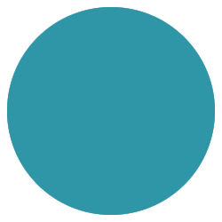
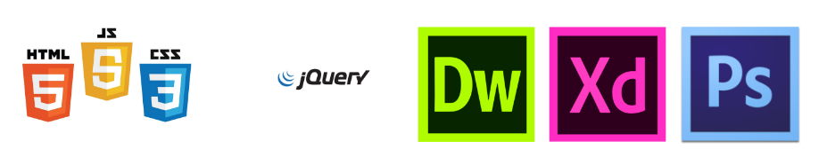
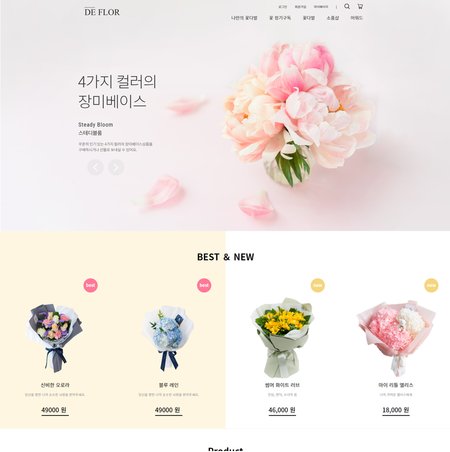

Scroll Down
About me

- 이름
- 생년월일
- 주소
- 이메일
- 연락처
- 김성연
- 1996.06.30
- 경기도 안성시 금산동
- ksy1041301@gmail.com
- 010 7638 5040
경력사항
- 2020.02
- (디지털 컨버전스) Java기반 플랫폼 연동
융합 개발자 양성 과정 수료
자격증
- 2021.03
- 2022.03
- 정보처리기사 (필기)
- 정보처리기사 실기 , SQLD , 웹디자인기능사 시험 볼 예정입니다. 꼭 채우겠습니다...
학력
- 2022.02
- 2015.02
- 남서울대학교 졸업
- 안성 고등학교 졸업
SKILS
Front_End

Back_end

PROJECT
야구용품 쇼핑몰 피닉스

내가 생각하는 나의 성격과 친구가 생각하는 나의 성격을 비교함으로써 겉으로 보이는 나의 모습이 어떠한지 파악해볼 수 있는 웹사이트입니다. 성격 검사 웹사이트는 무수히 많지만 이런 유형의 웹사이트는 전혀 없었고, 백 엔드 개발자와 협업하는 방법을 배울 수 있는 나름 가벼운 프로젝트였기 때문에 진행하게 되었습니다.
엔드 개발자와 협업하는 과정에 관해 많이 배울 수 있었던 프로젝트입니다. UI & UX 및 API 명세를 문서로 작성하여 소통하였습니다. 또한, 통신 과정에서 필요한 쿠키나 CORS 등의 개념에 대해서도 서로 많이 배울 수 있었습니다.
각종 애니메이션 효과와 canvas API등을 활용하여 디자인에도 공을 많이 들인 프로젝트입니다. 또한, 디자이너 없이 직접 디자인을 구상하며 UI & UX에 대해서도 많이 고민해볼 수 있었습니다.복수 페이지의 Next.js 웹사이트를 만들면서
라우팅, CSR, SSR, SSG에 대한 개념을 더욱 확실하게 익힐 수 있었던 프로젝트입니다.
인원
3인 프로젝트
주요 기능
상품 랭킹을 이용해 사용자들에게 간접적으로 상품을 추천해주는 시스템을 사용했습니다.
우리나라 우편 주소를 sql로 db에 넣을 필요 없이 간편하게 open api를 이용한 아이프레임 사용했습니다.
상품 내역과 관련된 상품 개수를 검색 할 수 있는 검색 기능을 이용해 사용자들이 편리함을 추구함을 위해 구현하였습니다.
우리나라 우편 주소를 sql로 db에 넣을 필요 없이 간편하게 open api를 이용한 아이프레임 사용했습니다.
상품 내역과 관련된 상품 개수를 검색 할 수 있는 검색 기능을 이용해 사용자들이 편리함을 추구함을 위해 구현하였습니다.
Front-end
HTML / CSS / JavaScript / XD / Visual Studio Code
Back-end
Mysql / JSP / Java / Tomcat
Customize 쇼핑몰 De Flor

내가 생각하는 나의 성격과 친구가 생각하는 나의 성격을 비교함으로써 겉으로 보이는 나의 모습이 어떠한지 파악해볼 수 있는 웹사이트입니다. 성격 검사 웹사이트는 무수히 많지만 이런 유형의 웹사이트는 전혀 없었고, 백 엔드 개발자와 협업하는 방법을 배울 수 있는 나름 가벼운 프로젝트였기 때문에 진행하게 되었습니다.
엔드 개발자와 협업하는 과정에 관해 많이 배울 수 있었던 프로젝트입니다. UI & UX 및 API 명세를 문서로 작성하여 소통하였습니다. 또한, 통신 과정에서 필요한 쿠키나 CORS 등의 개념에 대해서도 서로 많이 배울 수 있었습니다.
각종 애니메이션 효과와 canvas API등을 활용하여 디자인에도 공을 많이 들인 프로젝트입니다. 또한, 디자이너 없이 직접 디자인을 구상하며 UI & UX에 대해서도 많이 고민해볼 수 있었습니다.복수 페이지의 Next.js 웹사이트를 만들면서
라우팅, CSR, SSR, SSG에 대한 개념을 더욱 확실하게 익힐 수 있었던 프로젝트입니다.
인원
2인 프로젝트
주요 기능
나만의 꽃다발 만들기 나만의 꽃다발 페이지입니다
테마를 선택해 본인이 원하는 이벤트에 관련된 꽃을 볼 수 있습니다.
각 스텝별로 꽃다발 구성품을 선택 할 수 있으며 꽃의 경우 돋보기 아이콘을 이용해 꽃의 꽃말과 특징들을 알아보고 고를 수 있게 도움을 주고 있습니다
커스터마이징을 통해 독특한 꽃 구성 신선한 포장 등 본인만의 개성을 담은 꽃다발을 만들 수 있습니다
커스터마이즈가 끝난 상품들은 마이페이지와 장바구니에 저장되고 마이페이지에서 선택한 옵션들을 확인 할 수 있습니다.
각 스텝별로 꽃다발 구성품을 선택 할 수 있으며 꽃의 경우 돋보기 아이콘을 이용해 꽃의 꽃말과 특징들을 알아보고 고를 수 있게 도움을 주고 있습니다
커스터마이징을 통해 독특한 꽃 구성 신선한 포장 등 본인만의 개성을 담은 꽃다발을 만들 수 있습니다
커스터마이즈가 끝난 상품들은 마이페이지와 장바구니에 저장되고 마이페이지에서 선택한 옵션들을 확인 할 수 있습니다.
Front-end
HTML / CSS / JavaScript / XD / Visual Studio Code
Back-end
Mysql / JSP/ Java / Tomcat